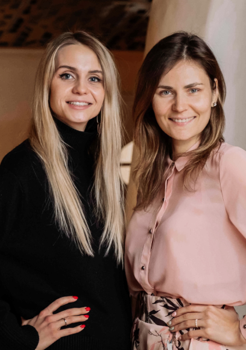
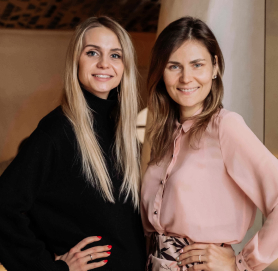

МЫ - МАЯК
Анна
Книппер
Кристина
Жегунова
Летом 2020, осмыслив всё, что мы делали последние 10 лет, мы придумали «МАЯК» — компанию мечты, которая помогает нашим клиентам выстроить свой бренд и собрать community вокруг него.

Creative Portfolio
Анна
Книппер
Кристина
Жегунова
Создание концепций
Разработка концепций ресторанных и около ресторанных проектов, включая меню, фишки, дизайн и философию бренда
Подбор и обучение команды
Поиск и формирование команды мечты через уникальную систему отбора и авторские тренинги
Организация пресс-туров
Подбор пулла СМИ и приглашение журналистов, проведение пресс-тура, включая культурную программу, коммуникация и договоренности по вопросам публикаций
PR
Создание pr-стратегии, проработка плана PR-кампаний с инициацией инфоповодов и активностей, создание пресс-релизов и рассылка по базе СМИ
Экспертный надзор
Курирование проекта на стадии реализации, рекомендации проверенных контактов
Гастроли для шеф-поваров
Подбор шеф-повара и проведение гастролей, включая обсуждение составления меню и продвижение ужина
Маркетинг
Выстраивание общего бренда, анализ и проработка концепции, отстройка от конкурентов
Исследования
Анализ рынка, конкурентов, составление портрета гостя
Создание стратегий продвижения
Создание маркетинг-, pr-, digital-стратегий для существующих и новых проектов
Менторство
Индивидуальные встречи с рестораторами и управленцами в формате вопрос-ответ и с разработкой детального плана работы

Influencer marketing
Сотрудничество бренда с инфлюенсерами, влиятельными людьми и блогерами
Создание контента
Организация и проведение имиджевых фото-и видеосъемок, создание и адаптация контента для социальных сетей
SMM
Создание стратегии для социальных сетей, коммьюнити-менеджмент, таргетированная реклама
Создание сайтов
Разработка дизайна интерфейсов страниц, разработка самого сайта, наполнение контентом, техническая поддержка
Digital
Seo, контекстная реклама, работа с отзывами, ресторанными и городскими ресурсами
Дизайн
Разработка брендинга, проработка макетов и верстки меню, а также создание баннеров
ПРОЕКТЫ


КОМАНДА
МАЯК -
КОМАНДА
МАЯК -